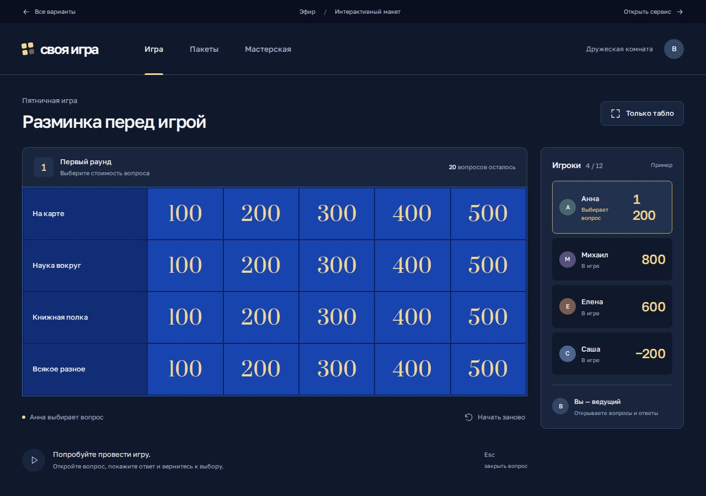

Эфир
Спокойный тёмный интерфейс. Табло слева, игроки справа. Удобно следить за вопросами и участниками одновременно.
Посмотреть «Эфир»Сохранили синий цвет и золотые цифры. Пересобрали композицию, типографику и элементы управления. В каждом варианте можно посмотреть игру, пакет и мастерскую.
Я бы развивал «Эфир» для основного сервиса, а «Арену» оставил игровым режимом. Можно выбрать компоновку одного варианта и палитру другого. Сейчас важнее оценить расположение элементов, читаемость и настроение.